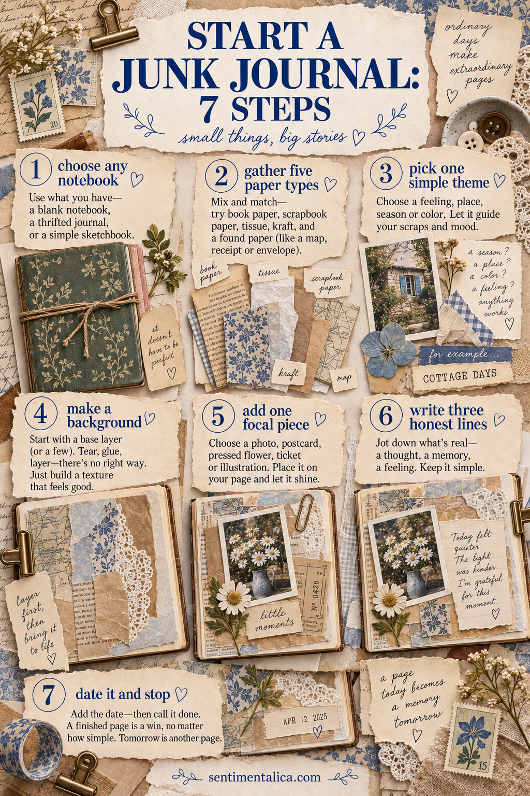
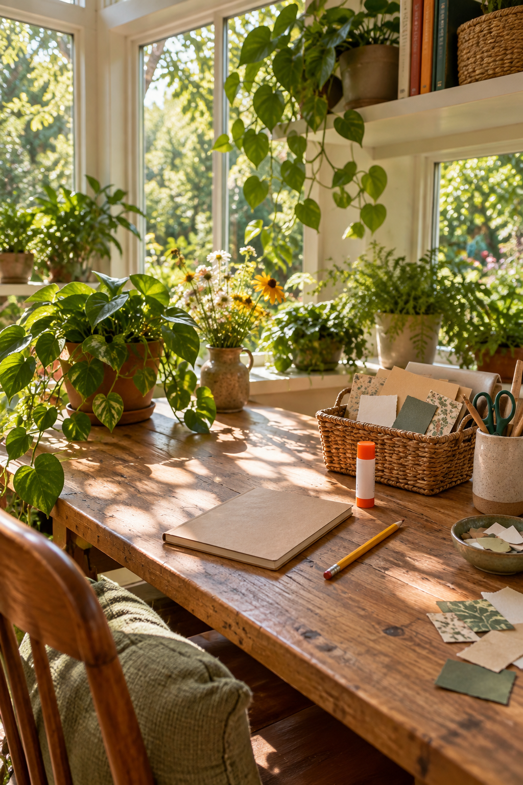

You do not need a perfect handmade book or a room full of vintage supplies to begin junk journaling. You need somewhere to put paper, something to stick it with and one small reason to make today’s page.

Step 1: choose any notebook
A sketchbook, exercise book, old diary or inexpensive blank notebook is enough. Beginners often delay because they think the journal itself must be special. It becomes special through use.
Step 2: gather five kinds of paper
Try one book page, one envelope, one piece of packaging, one plain writing paper and one patterned scrap. Five types provide variety without creating decision fatigue.
Step 3: pick one simple theme
Choose a feeling, place, color or ordinary event. “Quiet morning,” “blue things,” “my walk” and “what I cooked” are complete themes. You are not planning an entire book—only one page.
Step 4: make a background
Tear two or three papers into different sizes. Place the largest quiet piece first, then overlap a smaller texture. Leave part of the original page visible.
Step 5: add one focal piece
Use a photograph, ticket, pressed flower, postcard, label or illustration. Make it clearly more important than everything around it by giving it more space or contrast.
Step 6: write three honest lines
Describe what happened, how it felt or why you kept the item. Three lines are enough to turn decoration into memory. Your handwriting belongs on the page.
Step 7: date it and stop
A finished first page is more useful than an endlessly improved one. Add the date, close the journal and let tomorrow’s page teach you the next thing.
The only starter tools you really need
Begin with scissors, a glue stick and a pen. A ruler, clips, stamps and special inks can wait. If wet glue wrinkles your paper, use less and spread it thinly toward the edges.

Your first journal does not need a consistent style. It is where you discover one. Keep what feels good, notice what you enjoy repeating and allow the pages to become more personal over time.
Common beginner questions
What should go on the first page? Anything easy. A date, a favorite color, a small introduction or the packaging from the notebook itself can remove the pressure of a grand opening page.
What if the paper buckles? Let the page dry beneath a clean heavy book, with protective paper on both sides. Use thinner adhesive next time and avoid soaking lightweight paper.
Should every page match? No. Repetition will appear naturally as you reuse favorite colors, handwriting and materials. A journal can hold many moods and still feel like yours.
What should you save? Keep paper that carries a place, date, useful texture or emotional connection. You do not need every wrapper. One meaningful piece from an ordinary day is enough.
Give yourself a small container for scraps. When it is full, use or recycle something before adding more. This keeps collecting connected to making and prevents the hobby from becoming another source of clutter.